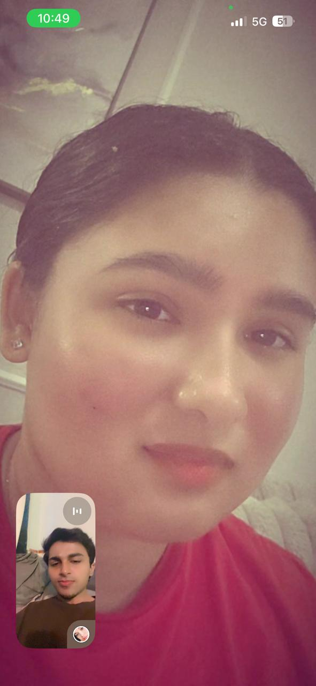
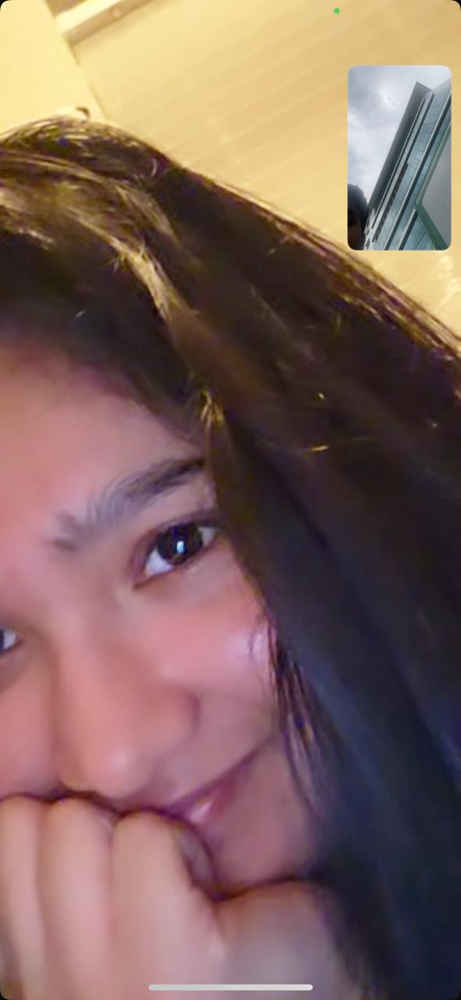

Even When You're Mad… ❤️
Even on the days we don't agree, you're still my favourite person.
JUST TWO LITTLE MOMENTS 👀❤️
Two photos. Two tiny memories. Both completely you.

Even on the days we don't agree, you're still my favourite person.

I got shy here the way you were looking at me with those eyes. ❤️